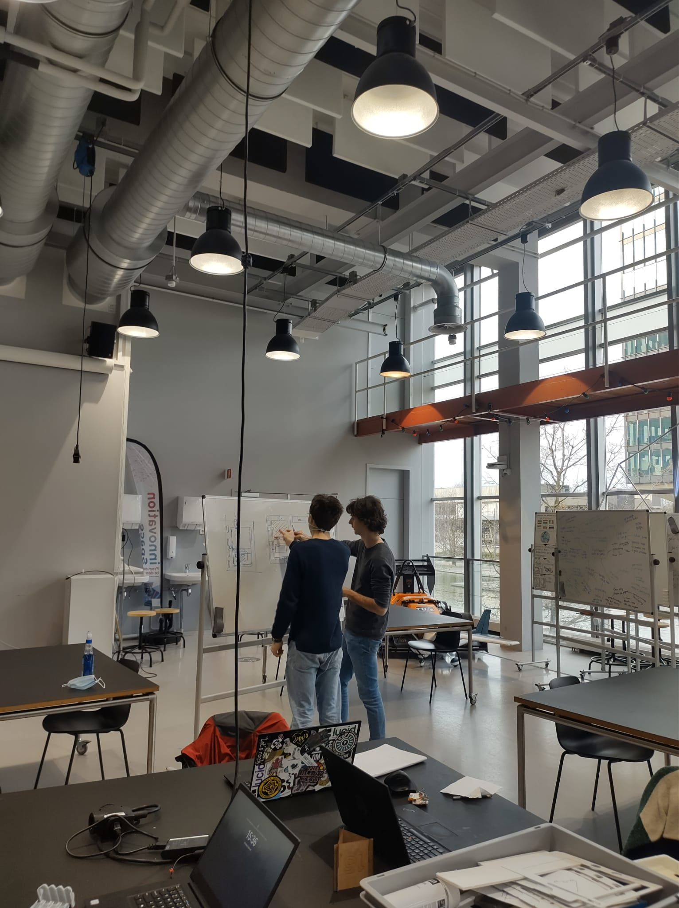
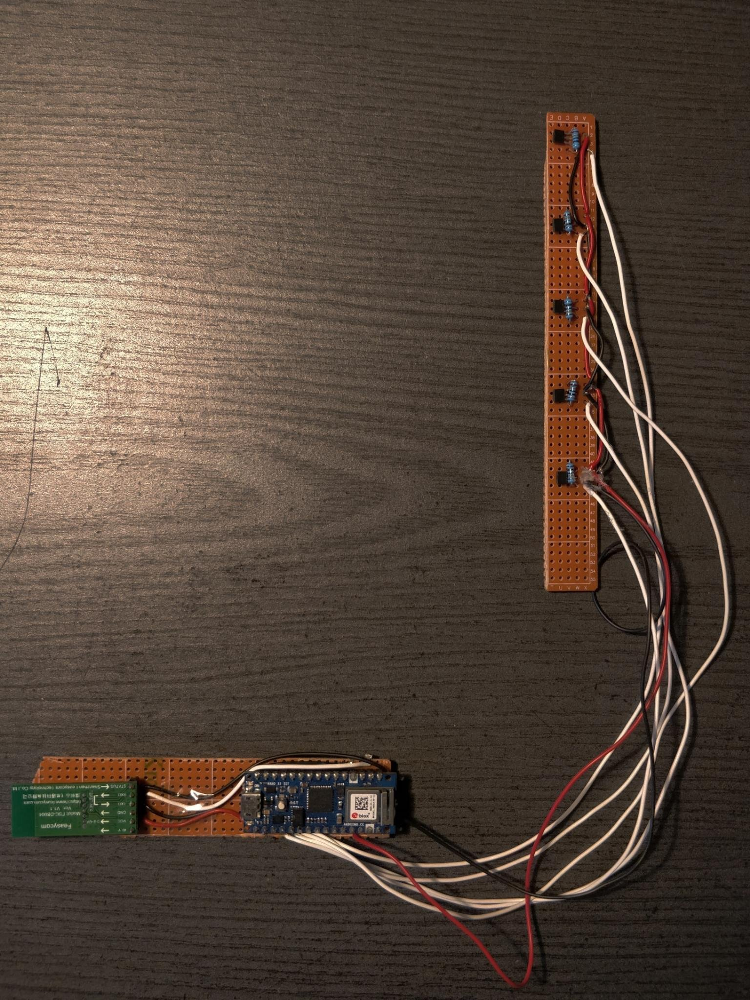

Project 2 started with an open-ended design case with a client called SWZ Zorg, a daycare activity center
for people with acquired brain injury. After research into the topic, the ideation process began. Before the
ideation process, the goal I had for the creative process was to successfully communicate creative ideas
with sketches. Communicating this to the team members was successful but I always felt that my sketches were
not professional enough to convince clients of ideas. This is also why blender was used to create realistic
representations of the concept. Looking beyond personal development from the creative process I feel like
there was too much time spent on coming up with the concept idea. While the idea of having an electronic
planner device called Weekboek was the result of this long process, a planner was already talked about early
in the ideation process. What I learned from this is that ideation sessions should be met with prototyping,
feedback and reflection to give them meaning.

After project 2 ended the client felt that the concept was something worth further developing and even
spending some money on. This opened up a great opportunity for us as a team to continue developing ourselves
with this continuation. For me, this meant that I wanted to continue on the technological side of
prototyping. This meant determining the parts of Weekboek that were essential for the user and making those
parts work. Like a flip of physical pages should change the day on the planner app displayed on a tablet.
creating a tangible experience.
First, communication between tablet and electonics was attempted with the USB on-the-go protocol but after
hitting a lot of bumps with the combination of charging and serial communication, wireless communication was
explored. This is why Bluetooth was chosen. First I and another teammate tried to make this possible with
Bluetooth low energy, although learning about the Bluetooth low energy protocol was useful for my
understanding of wireless communication. It resulted in too many issues making it communicate with the app
that was being developed with another team member. This is why regular Bluetooth was chosen to establish
communication with the tablet. Because of a lack of knowledge of how serial communication actually worked
this did not work immediately and led to having to find out how it exactly worked. Here I got a deeper
understanding of how serial communication works on the level of baud rates and how this translated into the
actual bits being sent through the Bluetooth module. After gaining this knowledge the problem was solved on
the technological and programming part, which also meant my development was over on that part. Additionally,
I also learned important soldering techniques and in general got a better understanding of electronic
theory. Also, a better understanding of using open source software came along with learning about the
Bluetooth protocol and trying to find the right libraries online.